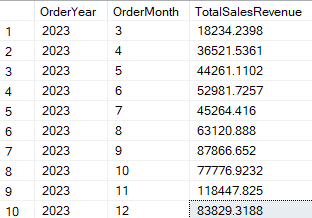
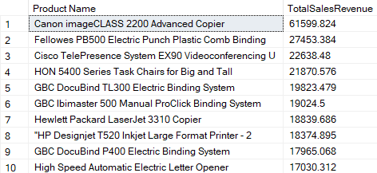
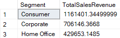
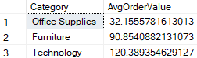
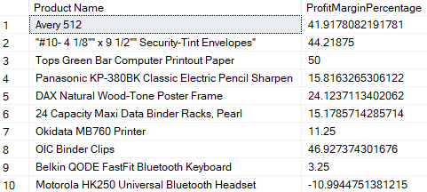
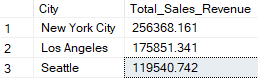
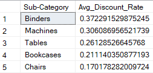
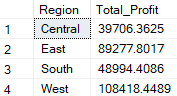
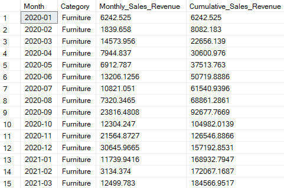
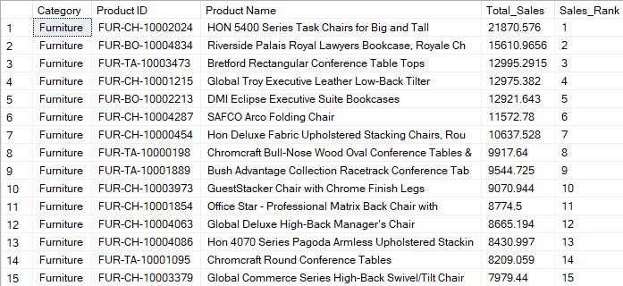

Introduction
In today's competitive business environment, data-driven decision-making is crucial for success. Combining the power of SQL queries with data visualization tools like Tableau enables businesses to extract actionable insights from their datasets efficiently. Let's delve into how each SQL query, coupled with Tableau, addresses specific business challenges, empowering organizations to make informed decisions.
Schema
Order Table
The "Order" table stores transactional data, including order details such as IDs, dates, shipping information, customer IDs, and product-related metrics like sales, quantity, discounts, and profits.
Customer Table
The "Customer" table contains customer identities and names, enabling businesses to track customer interactions, personalize marketing efforts, and enhance customer relationships.
Product Table
The "Product" table provides information about the products offered, including categories, sub-categories, and names, aiding in product performance evaluation and inventory management.
Location Table
The "Location" table captures geographic data such as postal codes, cities, states, and regions, facilitating regional sales analysis, market targeting, and logistics optimization.
SQL Analysis
-
What is the trend of total sales revenue over the past year, broken down by month?
Analyzing sales trends over time can help in understanding seasonal variations and making informed decisions about inventory management, marketing strategies, and resource allocation.
 -
Which are the top 10 best-selling products in terms of total sales revenue?
Understanding the distribution of sales revenue among different customer segments can guide customer segmentation strategies, targeted marketing campaigns, and customer relationship management initiatives.
 -
How does total sales revenue vary across different customer segments?
Analyzing sales trends over time can help in understanding seasonal variations and making informed decisions about inventory management, marketing strategies, and resource allocation.
 -
What is the average order value for each product category?
Calculating the average order value per product category can provide insights into customer purchasing behavior and inform pricing strategies, cross-selling opportunities, and product bundling tactics.
 -
How many new customers were acquired each month?
Tracking new customer acquisition over time helps evaluate the effectiveness of marketing campaigns, assess customer acquisition costs, and measure business growth.
 -
What is the profit margin percentage for the top 10 products?
Analyzing profit margin percentages for top-selling products is essential for evaluating product profitability, pricing strategies, and identifying opportunities for cost optimization.
 -
What are the top 3 cities by total sales revenue?
Identifying high-performing sales regions can inform market expansion strategies, resource allocation for sales teams, and targeting of promotional activities.
 -
What is the total profit generated in each region?
Analyzing profit generation by region helps evaluate regional performance, optimize supply chain logistics, and identify opportunities for market development or improvement.
 -
What is the cumulative sales revenue over time for each product category?
Tracking cumulative sales revenue over time helps assess product category performance, identify trends, and make informed decisions about inventory management and product portfolio optimization.
 -
What is the rank of products based on their total sales revenue within each product category?
Understanding the relative sales performance of products within each category helps identify top performers, prioritize inventory management, and optimize marketing strategies.

Conclusion
SQL queries play a crucial role in extracting actionable insights from business data. By leveraging these queries, businesses can gain a deeper understanding of their operations, identify growth opportunities, optimize performance, and ultimately drive success in a competitive marketplace. Whether it's analyzing sales trends, identifying top-selling products, or evaluating regional performance, SQL queries provide valuable tools for informed decision-making and strategic planning.